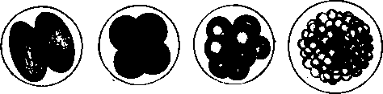

204. The Ovaries Of Persons Who Have Died In The Prime Of Life Present
Description
This section is from the book "Animal Physiology: The Structure And Functions Of The Human Body", by John Cleland. Also available from Amazon: Animal Physiology, the Structure and Functions of the Human Body.
204. The Ovaries Of Persons Who Have Died In The Prime Of Life Present
The Ovaries Of Persons Who Have Died In The Prime Of Life Present, scattered through their tough fibrous structure, and more or less distinctly seen from the surface, a variable number of clear vesicles, one or two of which may be like very large beads immediately beneath the peritoneum. These are called Graafian vesicles; each of them contains an ovum, and gradually enlarging, and approaching the surface as it enlarges, eventually ruptures and discharges its ovum, covered with a coating of granules, the discus proligerus. The ovum is caught up by the fimbriated extremity of the Fallopian tube, which would appear to be applied to the rupturing vesicle for that purpose.
While only a limited number of these vesicles are visible with the naked eye, the microscope reveals others of minute size in vast multitudes, which have been estimated at more than 70,000 in one individual (Henle). The ova, moreover, make their appearance prior to the vesicles which subsequently surround them, and already exist in large numbers before birth. The germinal vesicle makes its appearance first, then the rest of the ovum; the ovum subsequently becomes imbedded in corpuscular matter, and this becomes separated by imbibition of fluid into two strata, one of which adheres to the ovum, and is the discus proligerus alluded to, while the other adheres to the ovisac, and is named membrana granulosa. In their early stages of development, the ova move from the circumference towards the attachment of the ovary, the smallest ova being found close to the peritoneum. It is only when the Graafian vesicles begin to fill with fluid that they push their way in the direction of least pressure, precisely as an abscess would, and thus approach the peritoneum again, at the same time that the ovum quits the centre of the vesicle, and adheres to the outer wall. The originally centripetal movement reminds us that although in all the higher vertebrata, and many fishes, the ova escape by peritoneal rupture, yet in the majority of osseous fishes they grow in festoons, directed to the centre of a hollow organ, which opens by a duct, like a secreting gland Also the homologous organ in the male is a secreting gland, in which the secretion travels from the circumference towards the attachment; and a rudimentary appearance of secreting tubules, in which the ova are developed, has been noticed in mammalian ovaries by some observers. Thus the ovary may be regarded as an imperfectly developed secreting gland.
Fig. 143. Ovary and Oviduct of Sunfish (Orthragoriscus mola) laid open.
At periodic intervals of a month's duration, one or more Graafian vesicles ripen, rupture, and discharge their contents. At the same time, the mucous membrane of the uterus shares in the vascular excitement which the ovaries exhibit, and this passes away with an extravasation of blood from the surface. Each Graafian vesicle has an exceedingly vascular wall, embracing the proper ovisac, and when the vesicle bursts, its vessels, being no longer supported, give way, and fill the cavity with a clot. This clot and the sac around it undergo various changes; the clot disappearing, while the sac becomes yellow, and increases in thickness and size, particularly when impregnation has taken place. The structure which is thus formed is called a corpus luleum, and subsequently disappears, leaving nothing but a cicatrix. It does not seem to fulfil any function, but rather to be a growth resulting from the vascular excitement of the structures around.
205. In the male, the germ-preparing glands, corresponding to the ovaries in the female, are the testes. They differ, however, from the ovaries, in leaving, before birth, their original situation within the body, and descending to a position external to the abdominal cavity, as also in being developed Into exceedingly complex tubular glands, with their duets in Structural continuity with them. The technical names of the different parts of the ducts are mentioned in the explanation of the accompanying diagram. It is sufficient to note that the length of channel through which the secretion has to pass is without parallel in the rest of the body; that the secreting tubules are upwards of two feet long, and that the duct called the epididymis is estimated as being twenty feet in length, and is ciliated. The advantage gained by this complexity is not known. The main ducts open into the urethra, a little in front of the bladder, where that passage is surrounded with a glandular structure called the prostate; and in the middle line, close to the two ducts, is a small pouch, just big enough to admit a probe, called the sinus pocularis, interesting as being the structure which, in the female, is developed into uterus and vagina.
Fig. 144. Diagram of Seminiferous Tubules and Ducts, a, a, Tubuli seminiferi; b, b, vass recta; c, rate testis; d, vasa effer-entia, from twelve to fifteen in number; e, coni vasculosi; f,f, epididymis; g, vas aberrans; h, vas deferens.
Fig. 145. Spermatozoa.
The male germs, or essential elements of the secretion of the testes, are called spermatozoa. They are bodies varying from to of an inch in length, and consist of a pear-shaped body, with a tail extending out from the broad end. The tail moves with a rapid undulatory movement, which sends the spermatozoon forwards, body foremost. The spermatozoa are developed in the interior of cells, the protoplasm of which has been observed adhering to their heads in the young state, and they may very probably be regarded as elements morphologically equivalent to nuclei. Their development is not completed till they leave the secreting tubes. 206. Observations on the lower animals leave no doubt that fertilization of the ovum takes place by the entrance of spermatozoa into the interior of the zona pellucida, after which, both spermatozoa and germinal vesicle are melted down in the yelk, which thereby acquires new properties, and divides first into two parts, then into four, and so on, each part dividing always into two, until the whole yelk is converted by this process of cleavage into a mass of nucleated corpuscles, devoid of cell walls, from a certain number of which the future animal is developed. These being the facts, the student may see that impregnation may be regarded as the fusion of two mutually attracted units of life into one; and that it is possible to consider the ancestry of every nucleated corpuscle of the body as an unbroken chain, through generations, from parents to children.
Fig. 146. Cleavage of the Yelk. The dog. Bischoff.
In its passage downwards through the Fallopian tube, the ovum undergoes some enlargement, and the zona pellucida receives a coating of albuminous substance, gradually increasing in thickness. On reaching the uterus, the envelope of the ovum, henceforward called the chorion, proceeds to throw out branching processes or villi, by which it becomes closely connnected with the uterine walls, and receives nourishment from them; and in these villi bloodvessels subsequently appear, connected with the embryonic circulation. The mucous membrane of the uterus, rich in tubular glands, and ordinarily covered with ciliated columnar epithelium, begins, even before the ovum reaches it, to become thick and spongy; it forms a growth which, from being cast off at the birth of the child, is termed decidua; and where the ovum is situated, this rises up and invests it, forming what is distinguished as the decidua reflexa, while that which lines the rest of the uterine cavity is called decidua vera. A secretion of fluid likewise takes place, and, for a period, two separate spaces exist within the uterus, namely, that of the general uterine cavity, and that which contains the ovum. It is some considerable time before this latter space grows sufficiently for the decidua vera and decidua reflexa to come into contact. Ultimately they are so closely blended that in the later months of gestation the decidua reflexa can no longer be recognised.
Fig. 147. Diagram of Decidua. a, Decidua vera; b, decidua reflexa; c, decidua serotina; d, ovular space, with villi of chorion round about; e, mucus plugging the cervix.
While the ovular space is separated, as has been said, from the uterine space by the decidua reflexa, it remains from the first in contact with the uterine wall on one side; and the mucous membrane of the uterus at this part exhibits, like the rest, an exaggerated growth, sometimes termed decidua serotina, destined to be more highly developed than the decidua vera, and becomes the medium of connection between the maternal structures and the child, after the vessels in the villi of the chorion at other parts have disappeared. The vessels referred to in the villi of the chorion are brought to it on the surface of a vesicular outgrowth of the embryo, named the allantois (p. 294); and, where in contact with the decidua serotina, the vessels of this allantois become greatly developed, as well as those of the uterine mucous membrane, and a structure is developed, called the placenta or afterbirth, by means of which the formed embryo or foetus receives nourishment from the mother till birth.
Continue to: